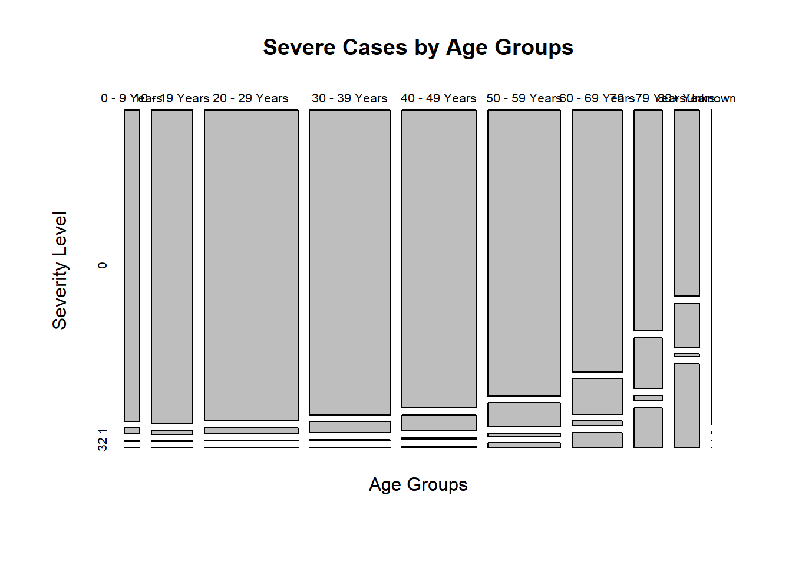
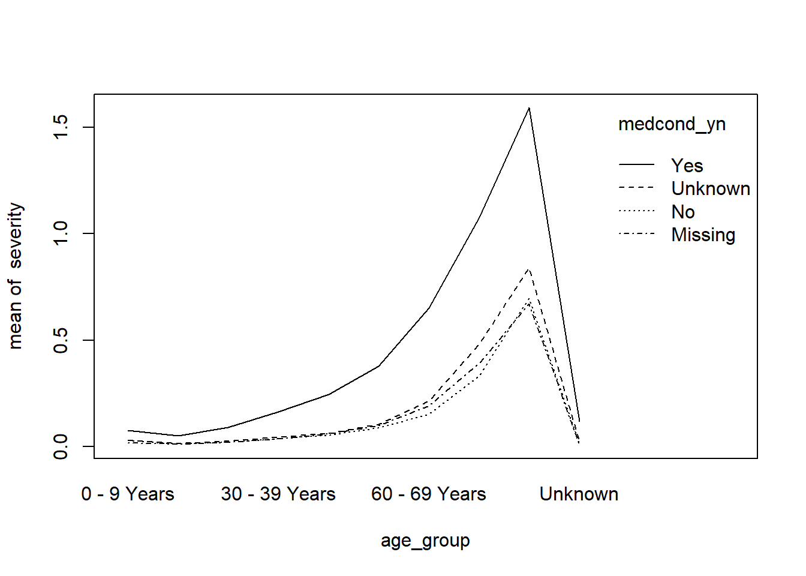

Covid Cases
Outcomes
- Download and load public data sets
- Read and interpret metadata
- Evaluate general claims using data, in the presence of missing data
- Create and interpret interaction plots
Instructions
- Answer the following questions, and show all your R code.
- Upload your submission to Canvas in nicely formatted HTML generated from Rstudio.
Download the COVID-19 Case Surveillance Public Use Data from the US Center for Disease Control (CDC). Click on the “Export” button in the top right corner next to download the actual data set.
Hint: It might be useful to create a new numeric column for severity based on the values of the hosp, icu, death columns. If you do this, make sure you explain the meaning and rationale behind your choices.
Questions
1 - Reading the Documentation
a) Describe this data set at a high level. What does each row represent?
This data set includes COVID-19 cases reported in US with date, medical condition data, ICU data, number of deaths, sex, age groups, race and ethnicity, etc. Each row represents each case reported.
b) How many rows and columns do you expect to see based on the website? Load the data into R. Is this reflected in the data?
covid = read.csv("C:/Users/kanni/Downloads/COVID-19_Case_Surveillance_Public_Use_Data.csv")
dim(covid)## [1] 4481062 11There are 4481062 rows and 11 columns in the data.
2 - Missing Data
There are few NA values in this data, but much of the data is missing, unknown, or blank. Which columns have the highest proportion of missing data? Why might these be missing?
missing_count = colSums(is.na(covid) | covid == "Missing" | covid == "Unknown")
missing_count## ï..cdc_report_dt pos_spec_dt
## 0 0
## onset_dt current_status
## 0 0
## sex age_group
## 54045 5281
## Race.and.ethnicity..combined. hosp_yn
## 1895805 2138483
## icu_yn death_yn
## 3932347 2269410
## medcond_yn
## 3536092Counting all NA values which includes missing, unknown, the column with highest counts is icu_yn with 3,932,347 NA values. These data might be missing as patients are still under care for COVID, but haven’t yet to be in ICU.
3 - Age Risk
The CDC states “Among adults, the risk for severe illness from COVID-19 increases with age, with older adults at highest risk.” Does the data support this claim?
Hint 1: It might be useful to think about these COVID illness rates by age after adjusting for the relative sizes of each age group in the country. You’ll need to bring in another data source to do this.
severity = rep(0, times = nrow(covid))
severity[covid$hosp_yn == "Yes"] = 1
severity[covid$icu_yn == "Yes"] = 2
severity[covid$death_yn == "Yes"] = 3
covid$severity = severity
table(covid$age_group)##
## 0 - 9 Years 10 - 19 Years 20 - 29 Years 30 - 39 Years 40 - 49 Years
## 140213 386579 869057 748175 694670
## 50 - 59 Years 60 - 69 Years 70 - 79 Years 80+ Years Unknown
## 671827 468486 263186 233588 5188Age_Severe_Plot = table(covid[, c("age_group", "severity")])
plot(table(covid$age_group),main = "Confirmed Cases by Age Groups", xlab = "Age Groups", ylab ="Confirmed Cases")
plot(Age_Severe_Plot,main = "Severe Cases by Age Groups",xlab="Age Groups",ylab="Severity Level")
For severity, I select hosp_yn as first level of severe illness, icu_yn as second level, death_yn as third level, and the rest as no severe illness. The table shows the number of cases at first, second, third level of severe illness increase with the ages groups. Also, cases with no severe illness decrease with the age groups.
4 - Medical Condition Risk
The CDC states “People of any age with certain underlying medical conditions are at increased risk for severe illness from COVID-19” Does the data support this claim?
table(covid$medcond_yn)##
## Missing No Unknown Yes
## 2977430 377203 558662 567767medcond_Severe_Plot = table(covid[, c("medcond_yn", "severity")])
plot(table(covid$medcond_yn),main = "Confirmed Cases with Pre-Medical Conditions", xlab = "Pre-Medical Conditions", ylab ="Confirmed Cases")
plot(medcond_Severe_Plot,main = "Severe Cases with Pre-Medical Conditions",xlab="Pre-Medical Conditions",ylab="Severity Level")
The table shows there are more cases at 1st-3rd level of severe illness among patients with pre-medical conditions. Also, there are more cases at no risk of severe illness among patients with no pre-medical conditions. This might not be enough to conclude patients with pre-medical conditions would be at a higher risk of severe illness. Besides, for NA values, it is still a relatively low number of cases at higher risk of severe illness.
5 - Interaction Effects
In statistics, an interaction effect is when two or more variables have a non additive effect in the value of some response. In the questions above, we explored the severity of COVID-19 (response) given variables age and medical condition. Do age and medical condition have an interaction effect in the severity of COVID-19?
class(severity)## [1] "numeric"with(covid, interaction.plot(age_group, medcond_yn, severity))
The graph indicates this might be the case that age groups and pre-medical conditions do have an interactive effect with the risk of severe illness.
6 - Your Question
Come up with your own question about COVID-19, and answer it using this data set. You may want to explore other demographic columns: sex, and race / ethnicity. You could also look at how the number of cases have changed over time using the report dates.
covid$medical = as.numeric(covid$medcond_yn == "Yes")
with(covid, interaction.plot(medical, sex, severity))
This graph includes the risk of severe illness as a response with given variables as pre-medical conditions and sex. The graph shows this might be the case that pre-medical conditions and sex do have an interactive effect with the risk of severe illness. In the case of missing, unknown, and others, it is inconclusive to interpret there is a shift.